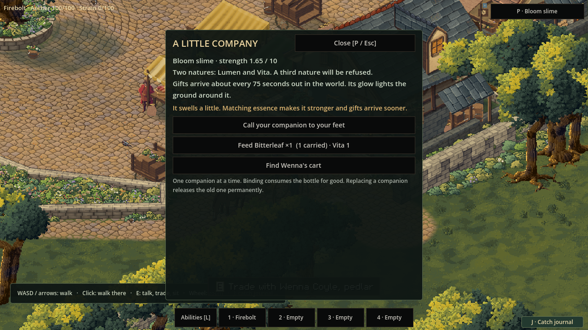
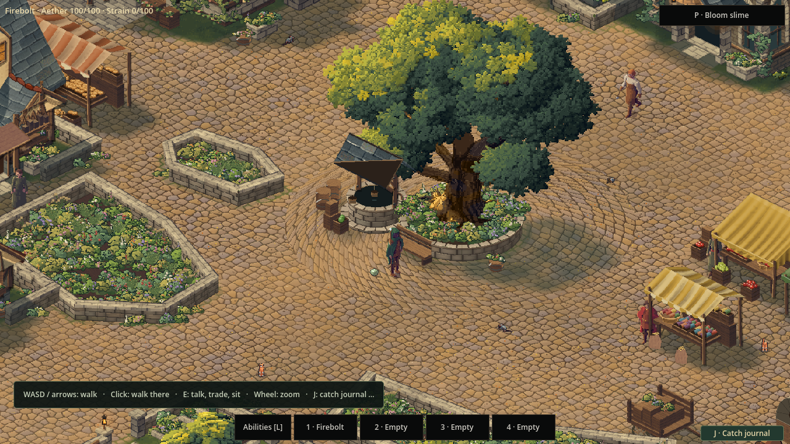

A little company
24 October 2026 · Day 33
A bottled slime can now become a companion in Sprawl’s playable town. Buy one from Wenna, give it a little care, and let what you feed it shape the creature that follows you home. Its growing nature, gifts and the things you spent all survive the next visit.

Someone to share the road
The market has people to meet, things to buy and places worth stopping. Walking away from the square still felt solitary. Sprawl already had rules for a small creature that could change with its keeper, but those rules belonged to the older test world. This update gives that creature a place in the town people actually play.
Wenna’s cart carries a few bottled slimes. They cost real coins and take space in the same satchel used for trading. Open the Companion card with P or its button to bind one. The bottle is consumed, and a little slime gathers itself at your feet.
There is one companion at a time. Binding a different bottle permanently releases the previous creature, so replacing one asks for a deliberate second press. Its growth is something to consider before letting it go.
Care changes what follows you
Each slime begins with one nature. Feeding it matching essence makes it stronger and brings its gifts closer together. Other food builds toward a second nature, with some combinations taking more readily than others. Clashing essences can make it shiver. Once a second nature has settled, the creature refuses a third.
A Glow slime fed Bitterleaf can become a Bloom slime. A Water slime given enough death essence becomes Venom. The changes come from the existing essence relationships, so food, growth and the creature’s new name belong to the same rules.
The card shows what suitable food you carry, how much a feeding uses and the progress already made. Every accepted feeding consumes one actual item. A refusal leaves it in your satchel. Wenna also carries a finite supply of food and essence, giving those choices a place in the market.
Following the way you walked
The companion hops along the route your feet have already taken. That sounds simple until a house, a doorway or a stair stands between you. Cutting straight toward the player would send it through the furniture.
Its trail follows the town’s accepted footsteps, checking each part against the same ground and obstacles. If a route breaks, the creature waits and tells you. The Companion card lets you call it to your verified footing. That is a deliberate magical recall, with a clear place to arrive.
Glowing natures also cast a local light. Their movement has a small hop and a settling wobble. Reduced motion removes the hop and idle wobble while the creature keeps following.

A gift that stays yours
During time spent in the active world, the companion occasionally gives a measure of its essence. A stronger creature gives more often. A creature with two natures gives both over time. Closing the game pauses that clock; it does not build up a pile of gifts while you are away.
A full satchel should never turn that moment into a lost reward. Gifts that do not fit stay safely with the companion, and the card lets you collect what there is room for. The remaining gifts stay there until you make more space.
Keeping that promise meant saving the whole exchange together: the creature and its feeding, the gift clock, the satchel, the purse and the merchant’s remaining goods. Returning to the game should bring back the companion you raised, with the same purchases paid for and the same gifts still yours.
The result is a small presence that changes the journey. A glow at your feet, a new nature earned through what you found, and a reason to keep a little Bitterleaf for someone else.